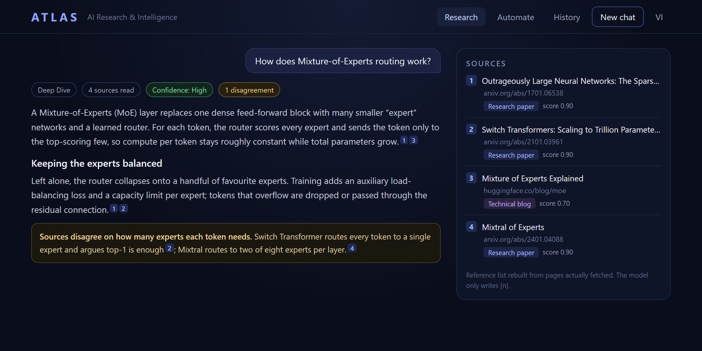

ATLAS 🌍
Agentic Task & Literature Analysis System
Built to answer one question: can a research assistant show its work? I took one system deep instead of chasing whatever shipped that week, and added new technology only when it earned its place.

In secondary school, an atlas was how you explored a world you had never seen. Mine does the same job in a different domain: it maps what is actually known about AI, and shows you where every fact came from.
Ask any chatbot for a literature review and you get something fluent and confident. What you cannot get is a reason to trust it. Which sources did it really read? Did it invent that citation? Would it tell you if two papers disagreed?
ATLAS is my answer. It researches AI topics: models, papers, tooling, benchmarks. Every piece of it is built so you can check the work. Five decisions carry that, and all five are implemented and tested.
- The model cannot fabricate a citation. It only ever writes [1], [2]. The reference list is rebuilt afterwards from the URLs the scraper actually fetched, so a source that was never read cannot appear in it.
- Source quality is scored by rules, not by another model. Every URL lands in one of ten categories, from official documentation down to low quality, each with a fixed score. The logic is deterministic and unit tested, so the same URL always scores the same. Low quality pages never become primary evidence.
- Deep research asks before it spends. It drafts a plan, sends it to the browser, and waits. Reject it or close the tab and the run stops. It fails closed: no answer means no, never yes.
- Disagreement gets reported, not smoothed over. Deep runs produce a contradiction ledger and a confidence level worked out from the mix of sources behind the answer. Arithmetic, not the model grading its own homework.
- 356 tests, and a security gate on every push. Semgrep, Gitleaks and a dependency audit run in CI and fail the build on any critical finding or leaked secret.
The last piece I built was Radar. You save a watch and it re-runs your topics on a schedule, then emails a digest where “what’s new” is exact set membership over deduplicated URLs, not the model’s recollection of what it saw last week.
It never had users, and I am not going to pretend otherwise. What I can point to is the reasoning. Every decision above is one I could have skipped and still had a working demo. I made them because a research tool that quietly makes things up is worse than no tool at all.